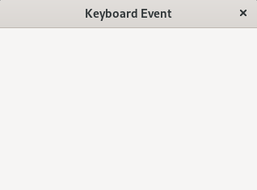

(update:2025/2/1)
キーボードが押されたときの動作を指定します。
| Gtk::ModifierType | |
|---|---|
| 返値 | 意味 |
| NO_MODIFIER_MASK | コントロールボタンやシフトボタンは押されていない |
| CONTROL_MASK | コントロールボタン |
| SHIFT_MASK | シフトボタン |
| ALT_MASK | altボタン |
#include <gtkmm.h>
#include <iostream>
class MyWindow : public Gtk::Window {
public:
MyWindow();
virtual ~MyWindow() = default;
private:
bool on_key_pressed( guint keyval, guint keycode, Gdk::ModifierType state );
};
MyWindow::MyWindow() {
set_title( "Keyboard Event" );
set_default_size( 320, 240 );
auto controller = Gtk::EventControllerKey::create();
controller->signal_key_pressed().connect(
sigc::mem_fun( *this, &MyWindow::on_key_pressed), false );
add_controller( controller );
}
bool MyWindow::on_key_pressed( guint keyval, guint keycode, Gdk::ModifierType state ) {
// Ctrl + x
if(( keyval == GDK_KEY_x ) &&
// コントロールキーが押されているかをチェック
( state & Gdk::ModifierType::CONTROL_MASK ) == Gdk::ModifierType::CONTROL_MASK ) {
std::cout << "CTRL + x" << std::endl;
return true;
}
// Shift + m
else if(( keyval == GDK_KEY_M ) && // SHIFT+MのMは大文字
// シフトキーが押されているかをチェック
( state & Gdk::ModifierType::SHIFT_MASK ) == Gdk::ModifierType::SHIFT_MASK ) {
std::cout << "SHIFT + M" << std::endl;
return true;
}
// Alt + f
else if(( keyval == GDK_KEY_f ) &&
// ALTキーが押されているかをチェック
( state & Gdk::ModifierType::ALT_MASK ) == Gdk::ModifierType::ALT_MASK ) {
std::cout << "ALT + f" << std::endl;
return true;
}
// SPACE
else if( keyval == GDK_KEY_space ) {
std::cout << "press space !" << std::endl;
return true;
}
// Return
else if( keyval == GDK_KEY_Return ) {
std::cout << "press Retrun !" << std::endl;
return true;
}
// Escape key
else if( keyval == GDK_KEY_Escape ) {
std::cout << "Escape ---> Exit!!" << std::endl;
close();
return true;
}
return false;
}
int main(int argc, char* argv[])
{
auto app = Gtk::Application::create( "gtkmm4.example" );
return app->make_window_and_run<MyWindow>( argc, argv );
}
| Keyboard event | |
|---|---|
| Console | Window |
|
$ press space ! press Return ! CTRL + x SHIFT + M ALT + f |
 |